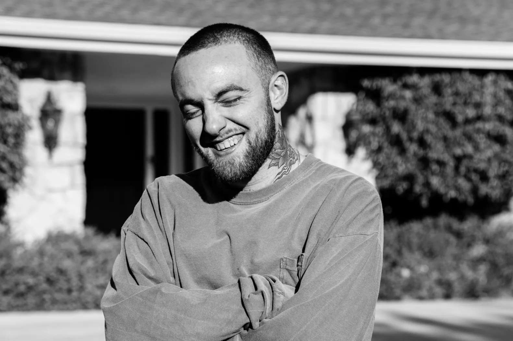

How Lukes's Music Taste Has Impacted Me
Luke's music taste blends hip-hop, R&B, and electronic genres, which I find remarkably similar to my own. When discussing his preferences for certain artists and genres, he emphasizes his appreciation for lyricism above other elements of a song. I feel the same way, which might explain why his music taste resonates so strongly with me. While the production of our preferred songs may differ, I believe it's our shared tendency to prioritize the message and story of a song over production or vocals that makes his music taste a greater influence on mine compared to others.
Favorite Artists
KAYTRANADA
Mac Miller
Frank Ocean
Jorja Smith
Kendrick Lamar

Anderson .Paak
Some Songs that I Love:
Here are a few songs that I love, two of which Luke introduced me to. I find myself gravitation to his music taste more than the others and I will often stalk his spotify playlists to discover new music.